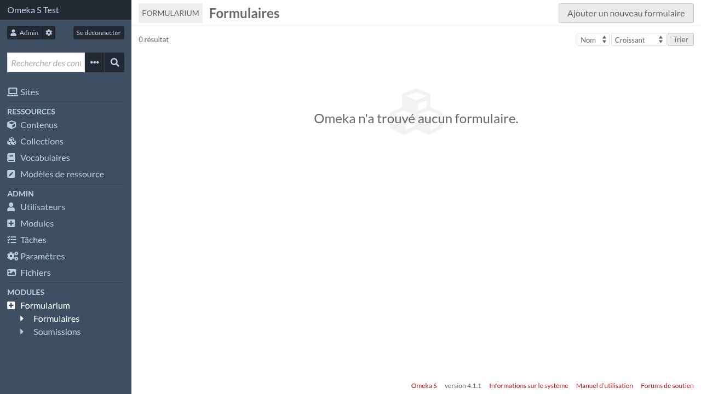
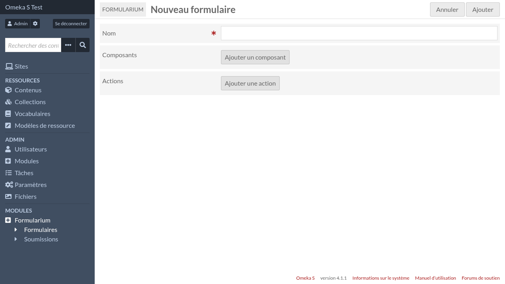
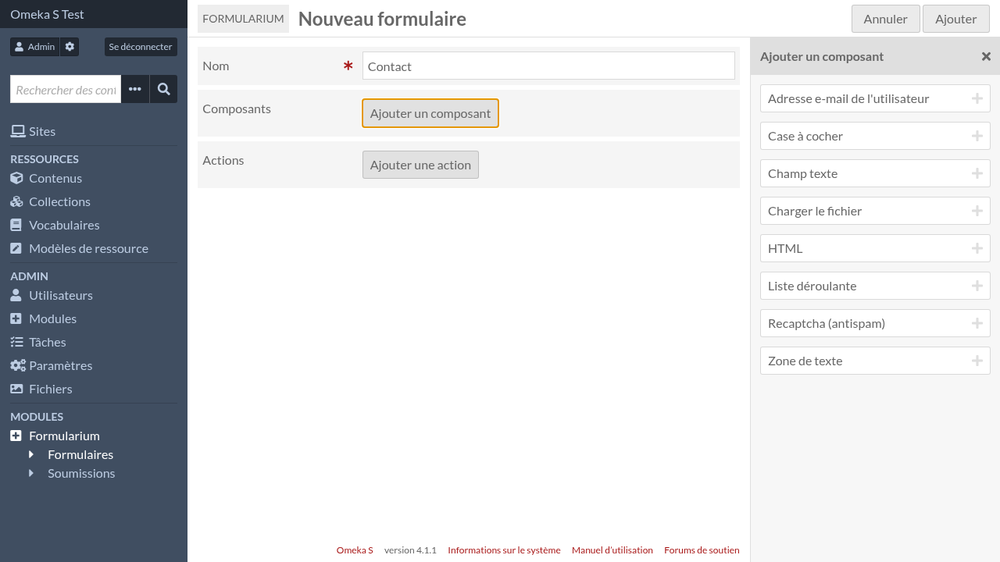
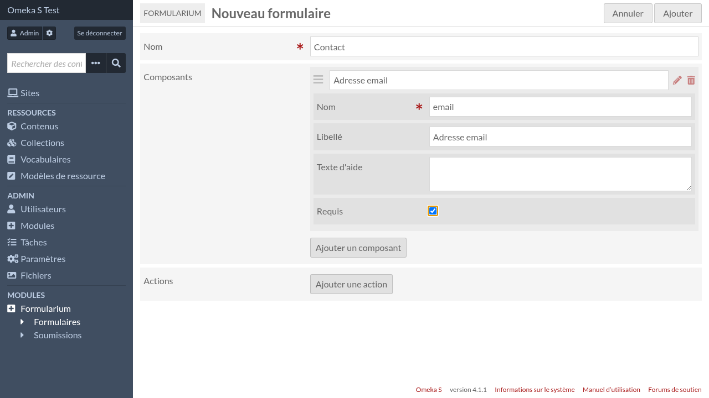
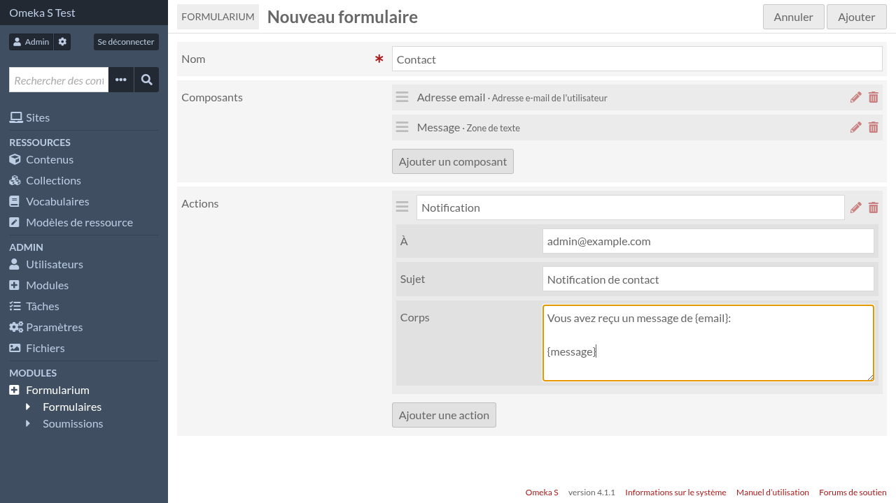
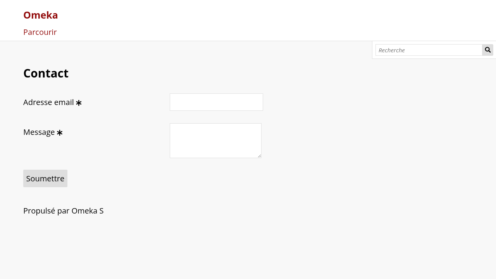

Formulaires
Créer un nouveau formulaire
Pour créer un nouveau formulaire, allez sur l’interface d’admin et cliquez sur « Formularium » dans le menu de navigation.
Puis cliquez sur « Ajouter un nouveau formulaire »
Donnez lui un nom, puis cliquez sur « Ajouter un composant » pour ajouter votre premier composant.
Dans la barre latérale, sélectionnez le type de composant que vous souhaitez ajouter, par exemple « Adresse e-mail utilisateur », et complétez le formulaire de paramétrage du composant.
Vous pouvez ajouter autant de composants que vous le voulez et modifier leur ordre. Vous pouvez aussi ajouter des actions. Les actions sont exécutées après une soumission de formulaire réussie.
Quand vous avez terminé, cliquer sur « Ajouter » pour enregistrer le formulaire.

Voir Composants du formulaire et Actions de formulaire pour avoir plus de détails à propos de leur paramètres.
Ajouter le formulaire à une page de site
Pour rendre le formulaire visible à vos utilisateurs, vous devez ajouter le bloc « Formularium » à une page de site, et sélectionner votre formulaire dans les paramètres du bloc.

La page ressemblera à ceci (avec le thème par défaut):
Les soumissions de formulaire sont consultables et gérables sur la page des soumissions de formulaire